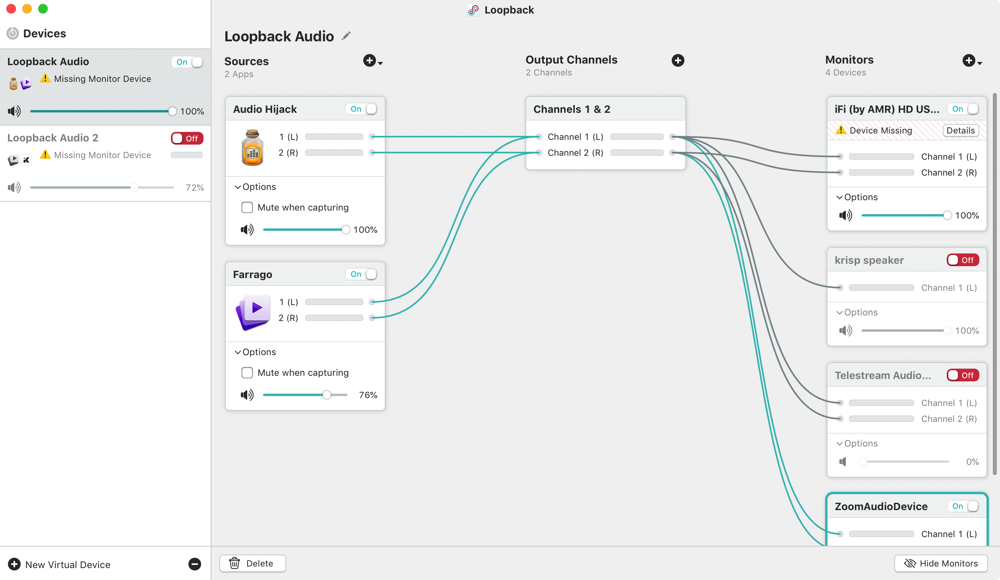

I wanted to write up a short post around the audio setup I am using for my day-to-day Zoom Calls. It might be helpful to others and it’s really given my audio setup a lift.
This post covers the specific details that my earlier post didn’t as I wanted to expand on my use of Krisp and how everything is setup for Zoom. These details will allow anyone reading to replicate this configuration for their own conference calls.
I use a Rode Podcaster USB Broadcast Microphone, a PSA1 Studio Boom Arm and SMR Advanced Shock Mount for my audio hardware for calls.
I am a huge fan of all things Rogue Amoeba, they simply make great software.
In Zoom I use the advanced audio configuration to enable the original audio input and remove echo cancellation as well as to select a higher quality of audio. These settings are really important as otherwise all the later audio processing won’t really add much quality or value to your audio for other call participants. In most calls, you will still have to manually select use original audio and hopefully down the line that will be might also be a default setting.
For Zoom, I use firstly use Krisp and I pipe my microphone to it as an input. It uses Deep Neural Networks to provide noise cancellation. It has ‘learnt’ many different noises and fairly seamlessly removes these from the audio input.
I think use Audio Hijack to further process the audio output from Krisp. I use the following processing elements: Declick, Dehum, AUHighShelfFilter, AUPeakLimiter, and AUMultiBandCompressor. This is then sent to a ZoomOutputDevice from within the application.
Finally, I use Loopback for wiring my Audio Hijack output to Zoom and to also link Farrango to Zoom. I find that Farrango is great as a sound board with a few extra sounds from FreeSound.org to add precanned sound effects to any call.
